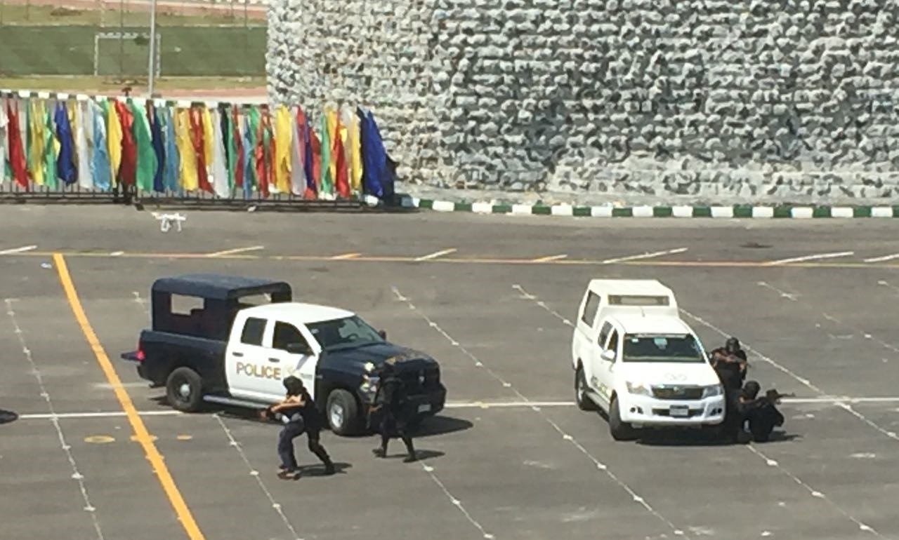

النشأة
_ قوات المهام الخاصة او قوات العمليات الخاصة تختص بالقبض على تجار المخدرات الكبار والبلطجية الشديدى الخطورة والقبض على المتطرفين الخ ولا تختص تلك القوات بمكافحة المظاهرات , بزغ نجم قوات المهام الخاصة (العمليات الخاصة Special Opertations ) التابعه للشرطه المصريه بعد ثورة 28 يناير عام 2011 حيث قامت تلك القوات بدوريات متواصلة فى المحافظات وكانت اول جهه شرطية تقوم بتنظيم دوريات بالمدرعات داخل المحافظات , ثم ازدادت اهمية تلك القوات حينما قامت بالخروج فى ماموريات مع الامن العام وكانت تختص بتأمين المكان والقبض على المشتبه به وتسليمه للقسم التابع له او لضابط المباحث المتواجد مع القوات

التدريب

تتلقى قوات العمليات الخاصه Special Opertations في الشرطه المصريه تدريباتها في معهد القوات الخاصه الذى يقع على طريق مصر- الإسكندرية الصحراوى، بنطاق محافظة الجيزة. بمجرد أن تدخل من الباب الرئيسى للمعهد، تلمح عيناك الآية القرآنية «وَأَعِدُّوا لَهُم مَّا اسْتَطَعْتُم مِّن قُوَّةٍ وَمِن رِّبَاطِ الْخَيْلِ تُرْهِبُونَ بِهِ عَدُوَّ اللَّهِ وَعَدُوَّكُمْ».
المعهد يمتد على مساحة أكثر من 72 فدانًا، حيث مبانى الإعاشة، وهى عبارة عن أماكن فندقية للضباط والأفراد الذين يتدربون فى المكان، خاصة القادمين من المحافظات، فضلًا عن وجود مبانى الخدمات، والعيادات الطبية التى يتوفر بها جميع الإمكانيات لعلاج رجال الشرطة، وقاعات التدريب، وقاعات المحاضرات النظرية المجهزة بأحدث ما وصل إليه العلم للشرح لرجال الشرطة قبل المهمات.
فى قلب المعهد تكتشف أنك وسط أضخم مجمع ميادين التدريب المتكاملة على مستوى الشرق الأوسط، والتى تمت إقامتها بناءً على المعايير الدولية المعمول بها فى عواصم العالم، حيث تضاهى ميادين التدريب فى أوروبا وغيرها من عواصم العالم المتحضر.
داخل مجمع ميادين التدريب تقع ميادين «الاقتحام، والرماية، والمحاكاة، والاشتباك، والفنون القتالية، والموانع، والرماية بالصبغة»، إلى جانب صالات الألعاب الرياضية والملاعب الرياضية المتعددة الأغراض.
المهام
رجال القوات الخاصة يتدربون على نحو 700 سيناريو مختلف عن جميع الحوادث التى ربما يتعرضوا لها، وكيفية التعامل معها باحترافية فائقة، وتمت إقامة مجموعة من المبانى تضاهى المناطق الشعبية لتنفيذ سيناريوهات مداهمة الخلايا الإرهابية، فضلًا عن إقامة مناطق جبلية للتدريب على اقتحام معسكرات الإرهابيين، والتعامل معهم دون خسائر فى صفوف رجال الشرطة. ويتدرب رجال الشرطة على الاقتحام بالذخيرة الحية، وإجراء عمليات الاقتحام المتكررة، والتعامل مع جميع الأبواب، بما فيها الأبواب المصفحة، ويتم تدريبهم على الغرف الضيقة والتعامل معها، والاقتحام تحت أنواع الإضاءة المختلفة والمؤثرات الصوتية المتنوعة.
ويجرى أبطال القوات الخاصة تدريبات عملية على «فتح الثغرة»، حيث يتم تدريبهم على كيفية الدخول من النوافذ، والتسلق للمبانى المرتفعة، والدخول من نوافذها للغرف، لإنقاذ رهائن أو التعامل مع خلايا إرهابية، حيث يسمح هذا التدريب لرجال القوات الخاصة بالحصول على كفاءة عالية فى تنفيذ المهام الصعبة.
وفى مشهد يؤكد كفاءة رجال القوات الخاصة، يتم تدريبهم على «برج الموندوز»، وهو عبارة عن برج ارتفاعه 7 طوابق متعددة، يتم تدريبهم على تسلقه بالحبال والدخول للنوافذ المختلفة فى كل طابق، للتدريب عمليًا على عمليات الاقتحامات.
الرماية
يتم تدريب أبطال القوات الخاصة على «الرماية من المركبات»، من خلال التدريب على الرماية بالرصاص من أعلى الدراجات البخارية، والتعامل مع الخارجين على القانون أثناء تحرك المركبات وإصابة الهدف.
ونظرًا للجوء بعض الكيانات الإرهابية لإقامة معسكرات لهم فى عمق الصحراء، يتم تدريب أبطال القوات الخاصة على ميادين الموانع، حيث يتدرب رجال الشرطة على اختراق جميع الموانع الصعبة، خاصة الصخور والمناطق الجبلية، والتحرك ببراعة فى هذه المناطق الجغرافية الصعبة للتعامل مع العناصر الإرهابية.